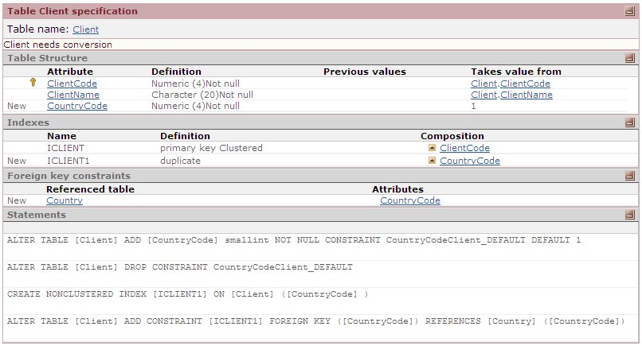
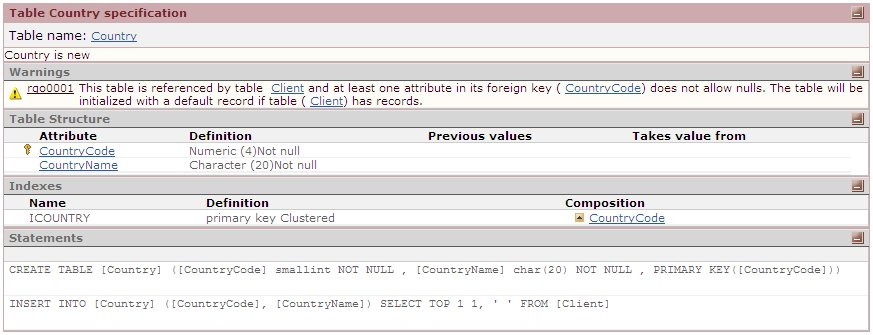
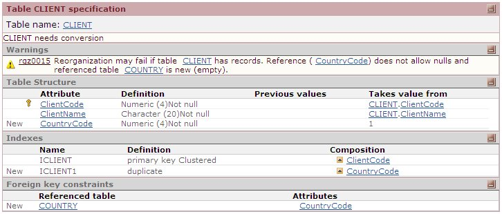

This reorganization allows you to add a new table, with a foreign key in it, into an existing table that is not empty. Let's see an example:
Trn Cient And the reorganization consists of:
1. New Trn Country
2. New FK to Country in Table Cient The Impact Analysis shows:   This type of reorganization was not supported in Genexus 9.0 and prior versions, and in fact a rgz0015 runtime control (like the one shown below) was given: 
|
| Backlinks |
| Reorganization Messages |